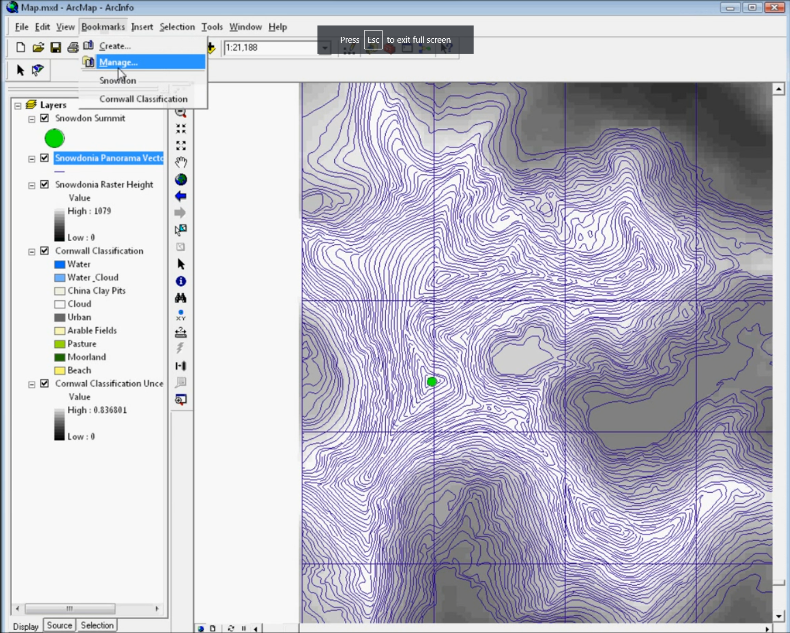

ArcMap: 1999 to 2024
We finally have an end date for ArcMap! This has been something that has been a long time coming, but I would say is certainly due now. ArcMap final date of support for software updates and patches has been announced as Feb 2024. ESRI launched ArcGIS Pro, the replacement for ArcMap, several years ago and people have been slowly transitioning.
ArcMap holds a special place in my heart because it is the software that I learnt GIS on. I first came across it in my undergraduate Geography degree at University of Leicester in 2003 - introduced to me by a certain Prof. Nick Tate if I remember correctly. This was the first time I had come across the combination of Geography and Computer Science and the subject suited me down to the ground.

Later on, I also spent a lot of time working with ArcMap 9.2 (above), which I used in my programming skills to use VBA (Visual Basic Applications) code to create a map that made sounds - an area called sonification, which formed part of my early research interests.
Things have certainly changed in the 20+ years since 2003. ArcMap itself progressed from version 8.3 all the way up to the now retiring version 10.8.2. Of course we have also seen the rise of open source: QGIS in particular as a competitor to ArcMap, and now potentially better than ArcMap or ArcGIS Pro, depending exactly who you are and what you are trying to-do.
We’ve also seen the rise (again) of scripting. With R leading the way and Python a performing a quick catch-up, the combination of easier to use software and ease of access to the benefits of scripting has seen GIS become much more accessible than it was 20 years ago. Some colleagues who have been using GIS longer than I have remember the days of AML, ArcInfo and Sun Microsystems - all of which used command line interfaces to work with data. Much of this was to handle larger data sets than was easy to do in a graphical interface with limited computer resources - much the same situation we see now with big data and bigger computers - but still with limited computer power to process that data.
I was saddened to hear that some students are still being taught ArcMap:
From https://twitter.com/pokateo_maps/status/1747717333211373896
For anyone teaching GIS now, ArcMap is not the tool to teach. It has been a long hard road of transition from ArcMap and I know moving software is not easy, but if anyone is still teaching ArcMap, I very much hope this is its final year. Of course anyone who would like help transitioning, ESRI provide a range of very good materials and I also have good consultancy rates - just get in touch!
One constant challenge in the geospatial environment is that the tools and technologies constantly change - and we see this across the board of geospatial. My advice to anyone coming into this area is to at least keep up with the changes and have an idea of what is happening, even if you don’t use the cutting edge in your own work. Much of GIS’s power is in its versatility and you can get 80% of this benefit with only learning 20% of the tools! Also that 20% of knowledge will easily transfer between QGIS, ArcGIS Pro, online web maps and many other GIS.
I’m really looking forward to the next 20 years, and who knows what it will hold?!
Best of luck with your GIS work!